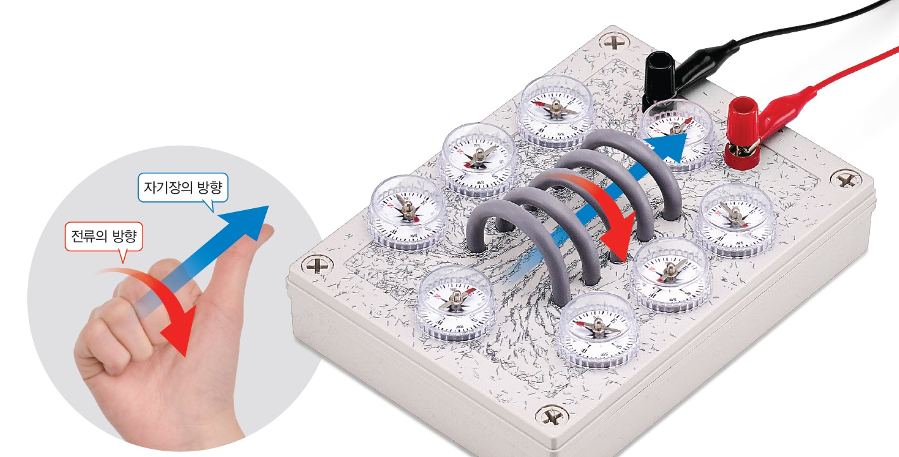

보이지 않는 자기력을 찾아서 🧲
음향 효과가 포함되어 있습니다.
중학 과학 2 - 7.3단원 자기장 개념 및 가상 실험
개념 설명 속 점선 빈칸을 클릭해 핵심 단어를 확인하고 자기장의 기초를 다져보세요!
자석과 자석 사이, 또는 자석과 쇠붙이 사이에 작용하는 힘입니다.
자기력이 작용하는 공간입니다. 나침반 바늘의 N극이 가리키는 방향이 그 지점의 자기장 방향입니다.
보이지 않는 자기장의 모양을 선으로 나타낸 것입니다. 자석의 N극에서 나와 S극으로 들어갑니다.
아래의 과정을 따라 실험장치를 조작하고 현상을 관찰해보세요.
과정 1. 코일 주위에 나침반 8개를 놓고, 그림처럼 스위치, 전류계, 전원 장치를 코일에 연결합니다.
과정 2. 스위치를 닫았을 때 나침반 바늘의 N극(빨간색)이 가리키는 방향을 관찰하세요.
관찰: 나침반 바늘들이 코일 주위를 감싸는 특정한 선 모양(자기력선)으로 배열됩니다.
과정 3. 전원 장치의 +, - 극을 바꾸어 연결해 전류의 방향을 반대로 바꾸어 봅니다.
질문) 전류의 방향이 바뀔 때 나침반 바늘이 가리키는 방향은 어떻게 달라지는가?
정답! 방향이 모두 반대가 됩니다.
과정 4. 스탠드에 클립을 매달아 코일에 가까이 가져간 뒤, 스위치를 닫아 움직임을 관찰하세요.
관찰: 클립이 자기력을 받아 코일 쪽으로 끌려옵니다.
과정 5. 전원 장치의 전류의 세기를 변화시켜 클립의 움직임을 관찰하세요.
질문) 전류의 세기에 따라 클립이 움직이는 정도는 어떻게 달라지는가?
정답! 자기력이 더 강해집니다.

오른손의 네 손가락을 코일에 흐르는 전류의 방향으로 감아쥘 때,
엄지손가락이 가리키는 방향이 코일 내부의 자기장 방향(N극)이 됩니다.
결론 1. 코일에 흐르는 전류의 방향을 바꾸었을 때 나침반 바늘의 방향이 변하는 것으로 보아, 전류의 방향이 바뀌면 자기장의 방향도 반대로 바뀐다는 것을 알 수 있습니다.
결론 2. 코일에 흐르는 전류의 세기가 셀수록 클립이 더 많이 끌려오는 것으로 보아, 전류의 세기가 셀수록 코일 주위의 자기장이 강해진다는 것을 알 수 있습니다.
1. 자기장의 방향은 나침반 바늘의 이 가리키는 방향과 같다.
2. 코일에 흐르는 전류의 방향이 바뀌면, 코일 주위에 생기는 자기장의 방향도 .
3. 코일 주위의 자기장 방향을 찾을 때는 의 네 손가락을 전류 방향으로 감아쥘 때 엄지손가락이 가리키는 방향으로 찾는다.
1학기 때 배운 원자 모형을 떠올려봅시다. 원자 안에도 작은 코일이 숨어있답니다!
원자 핵 주위를 도는 전자의 공전(오비탈, orbital)과 전자 스스로 도는 자전(스핀, spin)은 전하를 띤 입자의 이동입니다. 즉, 원형 코일에 전류가 흐르는 것과 같습니다!
전자의 운동 때문에 원자 하나하나가 N극과 S극을 가진 미세한 자석(자기 모멘트)이 됩니다.
철이나 가돌리늄(Gd, 64번) 같은 특정 물질은 원자 자석들이 한 방향으로 나란히 정렬하면 강력한 영구 자석(강자성)이 됩니다. 하지만 온도가 일정 수준 이상으로 올라가면 열에너지에 의해 흩어지며 자석의 성질을 잃어버리는데(상자성), 이 온도를 '퀴리 온도'라고 합니다. 가돌리늄은 퀴리 온도가 상온(약 20°C)입니다. 불과 얼음을 드래그하여 가돌리늄에 갖다 대보세요!
아이템을 드래그하세요
내부 자기 모멘트 (스핀 배열)
상자성 (뒤죽박죽 상태)
란타넘족(희토류) 원소들은 4f 전자 껍질에 전자가 부분적으로 채워져 있어 매우 강한 자기 모멘트(자석의 힘)를 가집니다. 이 원소들을 철(Fe)이나 코발트(Co)와 결합하면 고온에 강하고 자성이 쉽게 흩어지지 않는 강력한 영구 자석을 만들 수 있어 현대 첨단 산업의 필수 재료가 됩니다.
양자 자석(Quantum Magnet)은 원자 하나 또는 몇 개의 미세한 스핀을 조작하여 정보를 저장하거나 연산하는 차세대 자기 기술입니다. 란타넘족 원소들은 특유의 복잡한 전자 배치 덕분에 외부 환경의 간섭을 덜 받고, 0과 1이 중첩되어 공존하는 양자 상태(큐비트)를 안정적으로 유지할 수 있어 양자 컴퓨터의 핵심 재료로 주목받고 있습니다.
| 기호 / 번호 | |
| 평균 원자량 | |
| 전자 배치 | |
| 자기 모멘트 | |
| 단위 부피당 자기 모멘트 |